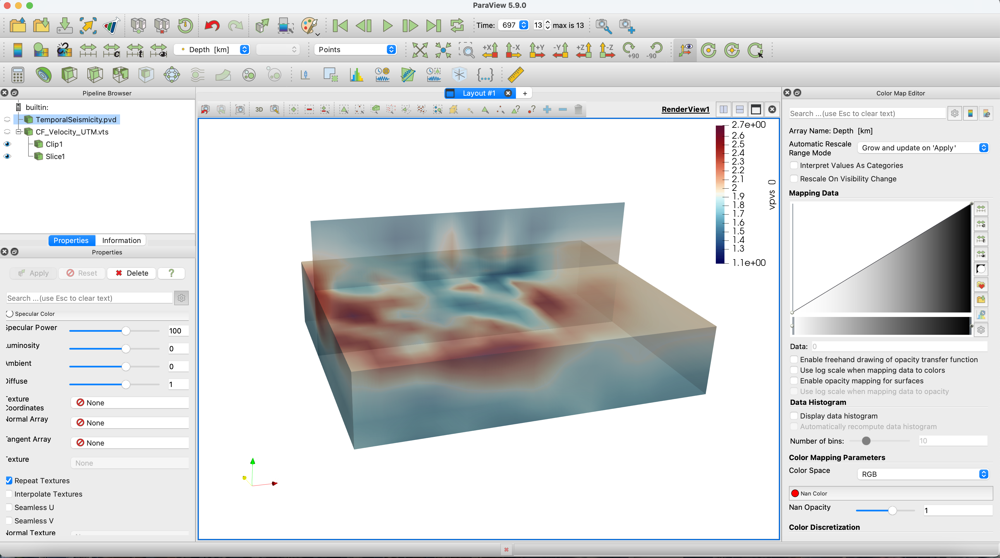
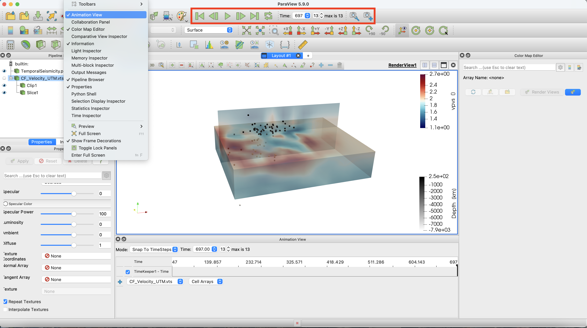

How to create a movie that shows the temporal evolution of seismicity
Goal
This tutorial creates a movie of the spatial variations in seismicity using the earthquakes previously visualized at Campi Flegrei caldera. We visualize it against the travel-time model and tomography:
- Earthquake data for the 1983-84 unrest:
- De Siena, L., Chiodini, G., Vilardo, G., Del Pezzo, E., Castellano, M., Colombelli, S., Tisato, N. and Ventura, G., 2017. Source and dynamics of a volcanic caldera unrest: Campi Flegrei, 1983–84. Scientific reports, 7(1), pp.1-13. doi:10.1038/s41598-017-08192-7
Steps
1. Download all data for region
You will need to download the zipped folder containing all files from here.
Make sure that you are in the unzipped directory. To reproduce exactly the figure, you will need the velocity model loaded in the km-scale volcano tutorial, here

2. Earthquakes in movie
Create the folder TemporalSeismicity in the current folder and open the movie with the function movie_paraview.
julia> using DelimitedFiles, GeophysicalModelGenerator, Dates
julia> p2 = @__FILE__;
julia> p2last = findlast("/",p2);
julia> p3 = chop(p2,head=0,tail = length(p2)-p2last[1]+1);
julia> output_path = string(p3,"/");
julia> movie = movie_paraview(name=string(p3,"/TemporalSeismicity"), Initialize=true);
julia> if isdir(string(p3,"/TemporalSeismicity"))==0
mkdir(string(p3,"/TemporalSeismicity"));
end
Now let's load the earthquake data provided as text files. The first column gives us a temporal marker we can use to plot earthquakes in different periods. We used the Date package to transform this time into dates.
julia> data = readdlm("SeismicLocations/Seismicity_UTM_1983_1984.txt", '\t', skipstart=0, header=false);
julia> l = length(data[:,1]);
julia> dates = Date.(zeros(l,1))
julia> for i = 1:l
df = DateFormat("yyyymmdd");
t1 = string("19",@sprintf("%5.o", data[i,1]));
t2 = Date(t1[1:8],df);
dates[i,1] = t2;
end
julia> WE = data[:,2];
julia> SN = data[:,3];
julia> depth = data[:,4];
julia> dates_num = dates - dates[1];
Select earthquakes every 50 days from the starting date (17/01/1983) and use them to create the frames for the video.
julia> nt = 50;
julia> dt = Dates.Day(nt);
julia> t = minimum(dates):dt:maximum(dates);
julia> for itime = 1:length(t)-1
name = string(p3,"/TemporalSeismicity/", string(itime));
tt=findall(x->(x>=t[itime]) & (x<=t[itime+1]),dates);
we = WE[tt];
sn = SN[tt];
Depth1 = depth[tt];
DN = dates_num[tt];
label_time = Dates.value(DN[end]);
if size(tt,1)>1
Data_set = UTMData(we, sn, Depth1, 33, true, (Depth=Depth1*km,Timedata=DN));
movie = write_paraview(Data_set, name,pvd=movie,time=label_time,PointsData=true);
end
end
julia>movie_paraview(pvd=movie, Finalize=true)This tutorial has created a new TemporalSeismicity.pvd file that can be loaded in Paraview.

Notice the animation panel, allowing you to run the video. You can select video speed by opening the Animation View under the View tab. Note that you can slow down the movie there if you need.

If you want to run the entire example, you can find the .jl code here